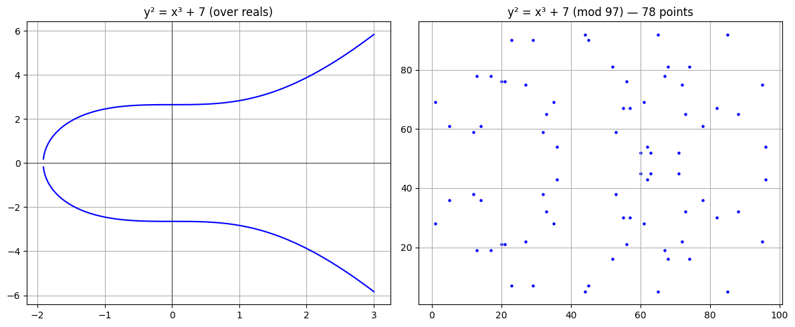

import hashlib
# SHA-256 takes bytes and returns a 64-char hex string.
# Same input -> same output, every time.
hashlib.sha256(b'123').hexdigest()'a665a45920422f9d417e4867efdc4fb8a04a1f3fff1fa07e998e86f7f7a27ae3'Risheek kumar B
September 28, 2025
This notebook walks through the core concepts of Bitcoin by building a minimal blockchain in Python. We cover three major areas of cryptography and how they fit together:
| Category | Algorithm | Role in Bitcoin |
|---|---|---|
| Hashing | SHA-256 | One-way fingerprints for blocks, transactions, mining |
| Asymmetric Crypto | ECDSA (secp256k1) | Public/private key pairs for identities & signing |
| Symmetric Crypto | AES, etc. | Used in wallets, not in the core protocol |
nonce until the block’s hash starts with enough zeros.hash()Python’s hash() uses SipHash-1-3 — a fast, non-cryptographic hash designed for dictionary lookups. It’s: - Randomized per session (to prevent HashDoS attacks) - NOT collision-resistant or suitable for security
Bitcoin needs SHA-256 — deterministic, collision-resistant, and one-way.
SHA-256 isn’t used to hide data — it’s used as a fingerprint. Given a hash, you can never work backwards to the original input. But given an input, you’ll always get the same hash. With \(2^{256}\) possible outputs, accidental collisions are essentially impossible.
'a665a45920422f9d417e4867efdc4fb8a04a1f3fff1fa07e998e86f7f7a27ae3'Elliptic Curve Cryptography builds on the math of elliptic curves — curves defined by:
\[y^2 = x^3 + ax + b\]
Bitcoin uses the SECP256k1 curve where \(a=0, b=7\):
\[y^2 = x^3 + 7\]
The hard problem: given a starting point \(G\) (the Generator), your private key is a big random number \(k\), and your public key is \(k \times G\) (point on the curve). Computing \(k \times G\) is easy, but reversing it (finding \(k\) from the public key) is computationally impossible with a 256-bit key.
The most common public-key system before ECC was RSA (Rivest–Shamir–Adleman, 1977), still widely used in TLS/HTTPS, email encryption, and digital certificates. RSA’s security relies on the integer factorization problem: given two large primes \(p\) and \(q\), it’s easy to compute their product \(n = p \times q\), but given \(n\) alone, factoring it back into \(p\) and \(q\) is computationally infeasible for large keys.
RSA works, but it has a problem. Factoring is vulnerable to sub-exponential algorithms like the General Number Field Sieve — attacks smarter than brute force. To compensate, RSA key sizes must keep growing: 2048-bit is the bare minimum today, 3072+ recommended.
Other systems (DSA, Diffie-Hellman, ElGamal) have the same weakness — they all need large keys. This is what makes ECC special: the elliptic curve discrete logarithm problem has no known sub-exponential attack. It’s fundamentally harder per bit:
| Security Level | RSA Key Size | ECC Key Size |
|---|---|---|
| 128-bit | 3072 bits | 256 bits |
| 192-bit | 7680 bits | 384 bits |
| 256-bit | 15360 bits | 521 bits |
A 256-bit ECC key provides security equivalent to a ~3072-bit RSA key — that’s over 10x smaller for the same security. For Bitcoin, this matters enormously:
In short: RSA works, but ECC gives you the same (or better) security in a fraction of the size. For a blockchain where every byte counts, that’s a big deal.
Below, we’ll first understand why Bitcoin uses these curves, and then visualize them — first over the real numbers (smooth), then over a finite field (discrete points).
Before we look at the curves visually, it helps to understand why Bitcoin uses them at all.
The core problem: Alice wants to prove she owns some bitcoin, without revealing her secret (private key). She needs a math operation that’s:
Elliptic curves give us exactly this. Your private key is just a big random number \(k\). Your public key is that number multiplied by the generator point \(G\) on the curve: \(K = k \times G\). Anyone can verify your signature using the public key, but no one can work backwards to find \(k\).
Why curves specifically? Because point multiplication on an elliptic curve is the hardest one-way function we know of per bit of key size — harder than RSA’s factoring problem. Think of it like mixing paint: easy to blend two colors together, but nearly impossible to look at the result and figure out exactly which two colors were used.
With the why established, let’s talk about what to look for in the diagrams.
Lets look at the Elliptical curves for intuition The diagrams below aren’t security proofs — they’re intuition for two things that matter later:
Symmetry: for every point \((x, y)\) there’s a matching \((x, -y)\). This is why Bitcoin can compress a public key to just the \(x\)-coordinate plus a single parity bit — saving ~50% space on every transaction.
Discrete points: Bitcoin doesn’t use the smooth curve — it uses a finite field (mod a prime \(p\)). All the point addition and multiplication still works, but on a scattered cloud of discrete points. The smooth curve is just for intuition.
With that in mind, here’s what they look like:
import numpy as np
import matplotlib.pyplot as plt
# --- Smooth curve (over real numbers, for intuition) ---
x = np.linspace(-2, 3, 1000)
y_sq = x**3 + 7
mask = y_sq >= 0
x = x[mask]
y_pos = np.sqrt(x**3 + 7)
y_neg = -y_pos
fig, (ax1, ax2) = plt.subplots(1, 2, figsize=(12, 5))
ax1.plot(x, y_pos, 'b')
ax1.plot(x, y_neg, 'b')
ax1.axhline(0, color='k', linewidth=0.5)
ax1.axvline(0, color='k', linewidth=0.5)
ax1.set_title('y² = x³ + 7 (over reals)')
ax1.grid(True)
# --- Finite field (mod 97, for visualization) ---
p = 97 # small prime for visualization (Bitcoin uses a 256-bit prime)
points = []
for xf in range(p):
for yf in range(p):
if (yf*yf - xf**3 - 7) % p == 0:
points.append((xf, yf))
xs, ys = zip(*points)
ax2.scatter(xs, ys, s=5, color='blue')
ax2.set_title(f'y² = x³ + 7 (mod {p}) — {len(points)} points')
ax2.grid(True)
plt.tight_layout()
plt.show()
print("Notice the symmetry: for every (x, y), the point (x, -y) also exists.")
print("This is why we only need to store x + a parity bit to compress a public key.")
Notice the symmetry: for every (x, y), the point (x, -y) also exists.
This is why we only need to store x + a parity bit to compress a public key.Since \(y^2 = x^3 + 7\), given \(x\) there are only two possible \(y\) values (one even, one odd). So a public key can be compressed from 65 bytes (full \(x, y\)) down to 33 bytes: just the full \(x\) coordinate + a prefix byte (02 = even \(y\), 03 = odd \(y\)).
private key (32 bytes)
↓ ECC multiplication
compressed public key (33 bytes)
↓ SHA256 → RIPEMD160
address hash (20 bytes)
↓ Base58Check encoding
Bitcoin address (e.g. 1A1zP1...)We use the secp256k1 library to generate a real key pair. The private key is 32 random bytes; the public key is the point \(k \times G\) on the curve.
A digital signature proves ownership of a private key without revealing it.
True if valid.We don’t just hash(private_key + message). That would require the verifier to know the private key. Instead, ECDSA creates a mathematical puzzle that can be verified with just the public key, but only solved with the private key.
# Step 1: Create and hash a message
msg = b'Send 1 satoshi to Bob'
msg_hash = hash_fn(msg)
# Step 2: Generate a key pair
priv_key, pub_key = get_account()
# Step 3: Sign the hash with the private key
# The signature is 64 bytes, mathematically tied to both the message and private key.
signature = priv_key.ecdsa_sign(msg_hash)
# Step 4: Verify using the public key (anyone can do this)
is_valid = pub_key.ecdsa_verify(msg_hash, signature)
print(f"Signature valid: {is_valid}")
# Step 5: Tamper with the message — signature should fail
tampered_msg = b'Send 10 satoshi to Bob' # 1 satoshi -> 10 satoshis
tampered_hash = hash_fn(tampered_msg)
is_valid_tampered = pub_key.ecdsa_verify(tampered_hash, signature)
print(f"Tampered signature valid: {is_valid_tampered}")Signature valid: True
Tampered signature valid: FalseBitcoin doesn’t track “accounts” with balances. Instead, it tracks individual UTXOs — like cash bills. If you have a $20 bill and buy a $5 coffee: - Your $20 UTXO is consumed as an input - Two new UTXOs are created as outputs: $5 to the shop, $15 change back to you
Your “balance” = sum of all UTXOs your private key can unlock.
A transaction can have multiple inputs — just like pulling three $5 bills from your wallet to pay for a $12 item. Each input needs its own signature.
class Transaction:
"""A Bitcoin-style transaction.
- inputs: list of UTXOs being consumed (must be unspent)
- outputs: list of new UTXOs being created
- signatures: list of ECDSA signatures, one per input
"""
def __init__(self, inputs, outputs):
self.inputs = inputs # UTXOs we are spending
self.outputs = outputs # New UTXOs being created
def validate_input(self):
"""Check that total inputs >= total outputs (you can't spend more than you have)."""
input_amount = sum(o.amount for o in self.inputs)
output_amount = sum(o.amount for o in self.outputs)
if input_amount >= output_amount: return True
return False
def transact(self):
"""Process the transaction: validate math and mark inputs as spent."""
if not self.validate_input(): return f'Invalid transaction'
for o in self.inputs: o.spent = True
def get_hash(self, input_index):
"""Hash the transaction data for a specific input.
The input_index ensures each input signs a slightly different hash,
preventing replay attacks (same concept as real Bitcoin)."""
tx_data = f"In:{[o.amount for o in self.inputs]} Out:{[o.amount for o in self.outputs]}; this is {input_index}"
return hash_fn(tx_data.encode())
def sign_input(self, input_index, priv_key):
"""Sign a specific input with the given private key.
Each input gets its own signature — the wallet does this automatically."""
if not hasattr(self, 'signatures'):
self.signatures = [None] * len(self.inputs)
self.signatures[input_index] = priv_key.ecdsa_sign(self.get_hash(input_index))
def verify(self):
"""Verify all signatures. Each input's signature must be valid against
the corresponding UTXO's public key."""
return all(
inp.pub_key.ecdsa_verify(self.get_hash(idx), sig)
for idx, (inp, sig) in enumerate(zip(self.inputs, self.signatures))
)Alice has two UTXOs (50 + 30 = 80 satoshis). She sends 70 to Bob and keeps 10 as change. She signs each input, then we verify the whole transaction is authentic.
# 1. Generate keys for Alice and Bob
alice_priv, alice_pub = get_account()
bob_priv, bob_pub = get_account()
# 2. Create Alice's UTXOs (she owns these from previous transactions)
utxo1 = UTXO(amount=50, pub_key=alice_pub)
utxo2 = UTXO(amount=30, pub_key=alice_pub)
# 3. Build the transaction:
# Inputs: 50 + 30 = 80 satoshis from Alice
# Outputs: 70 to Bob, 10 change to Alice
tx = Transaction(
inputs=[utxo1, utxo2],
outputs=[UTXO(amount=70, pub_key=bob_pub), UTXO(amount=10, pub_key=alice_pub)]
)
# 4. Alice signs each input (wallet does this automatically in practice)
tx.sign_input(0, alice_priv)
tx.sign_input(1, alice_priv)
# 5. Verify — miners do this before including the transaction in a block
print(f"Transaction valid: {tx.verify()}")
# 6. Process the transaction — mark old UTXOs as spent
tx.transact()
print(f"Inputs spent: {[u.spent for u in tx.inputs]}")Transaction valid: True
Inputs spent: [True, True]A block is a container for transactions, plus metadata that links it to the chain: - transactions: list of confirmed transactions - prev_block_hash: hash of the previous block (creates the “chain”) - nonce: the number miners brute-force to find a valid hash
Miners repeatedly hash the block while incrementing the nonce, looking for a hash that starts with a target number of zeros. This is Proof of Work: - Hard to find: millions of guesses required - Easy to verify: anyone can hash once and check - Difficulty = number of leading zeros required
The first miner to find a valid nonce broadcasts the block. The network verifies it, and the block is added to the chain. The miner earns a block reward + transaction fees.
class Block:
"""A single block in the blockchain.
- transactions: list of Transaction objects in this block
- prev_block_hash: hex string linking to the previous block
- nonce: number used once — miners increment this to find a valid hash
"""
def __init__(self, transactions, prev_block_hash, nonce=0):
store_attr()
def create_hash(self):
"""Hash the block contents: previous hash + transaction data + nonce."""
trans_str = self.prev_block_hash
for o in self.transactions: trans_str += str(o)
trans_str += str(self.nonce)
return hash_fn(trans_str.encode())
def mine(self, difficulty: int = 2):
"""Brute-force the nonce until create_hash() starts with `difficulty` zeros.
difficulty=4 means we need a hash starting with '0000'."""
target = '0' * difficulty
while not self.create_hash().hex().startswith(target):
self.nonce += 1
print(f"Mined block! Nonce: {self.nonce}")
print(f"Hash: {self.create_hash().hex()}")The very first block in a blockchain. Its prev_block_hash is all zeros because there’s nothing before it. (Bitcoin’s real genesis block was mined by Satoshi Nakamoto on January 3, 2009.)
# The genesis block contains our Alice->Bob transaction.
# Its prev_block_hash is all zeros (nothing came before it).
genesis_block = Block(
transactions=[tx],
prev_block_hash="0" * 64
)
# Mine it! Higher difficulty = more leading zeros = much longer to compute.
# Try difficulty=2 first, then bump to 4 or 5 to see the difference.
genesis_block.mine(difficulty=4)Mined block! Nonce: 60699
Hash: 0000599ce1c15af69c019c9b8563475beaeef688a6ced5923fa728edb833a551A Blockchain stores the chain and enforces linking: each new block must point to the current chain tip via its prev_block_hash.
When two miners find a valid block at almost the same time, the chain temporarily forks. The network resolves this by always following the longest chain (most cumulative work). The tie is broken when the next block is mined on one branch, and the other branch becomes an “orphan” that’s abandoned.
class Blockchain:
"""A simple blockchain that stores blocks and enforces hash linking."""
def __init__(self):
self.chain = []
self.prev_block_hash = "0" * 64 # genesis prev hash
def add_block(self, block):
"""Add a block only if its prev_block_hash matches the current chain tip."""
if block.prev_block_hash != self.prev_block_hash: return False
self.chain.append(block)
self.prev_block_hash = self.chain[-1].create_hash().hex()# 1. Initialize the blockchain
my_chain = Blockchain()
# 2. Add the genesis block (already mined above)
my_chain.add_block(genesis_block)
print(f"Chain length after genesis: {len(my_chain.chain)}")
# 3. Mine and add a second block
# Note: it links to the genesis block via my_chain.prev_block_hash
block_2 = Block(
transactions=[], # empty for simplicity
prev_block_hash=my_chain.prev_block_hash
)
print("\nMining block 2...")
block_2.mine(difficulty=4)
my_chain.add_block(block_2)
print(f"\nChain length after block 2: {len(my_chain.chain)}")Chain length after genesis: 1
Mining block 2...
Mined block! Nonce: 25841
Hash: 0000cc9875df0e8b172014556622fcf8a37289eafb7a5afe518c587c955852d2
Chain length after block 2: 21. IDENTITIES Alice & Bob generate private/public key pairs (secp256k1)
↓
2. TRANSACTION Alice takes her UTXOs, signs them with her private key,
creates new UTXOs locked to Bob's public key
↓
3. BROADCAST Transaction is sent to the network (mempool)
↓
4. BLOCK Miner packages transactions into a block, verifies signatures
↓
5. MINING Miner brute-forces the nonce until SHA-256 hash starts
with enough zeros (Proof of Work)
↓
6. CHAIN Block is added. Old UTXOs are spent, new UTXOs are live.
If two miners find a block simultaneously, the longest
chain wins (fork resolution).| Component | Class/Function | What it does |
|---|---|---|
| Hashing | hash_fn() |
SHA-256 hash returning raw bytes |
| Keys | get_account() |
Generate secp256k1 private/public key pair |
| UTXO | UTXO |
Unspent Transaction Output with amount, pub_key, spent status |
| Transaction | Transaction |
Groups inputs/outputs, handles signing & verification |
| Block | Block |
Holds transactions, links to previous block, mines with Proof of Work |
| Blockchain | Blockchain |
Stores the chain, enforces hash linking between blocks |
This is just the foundation. Here are natural next steps, roughly in order of complexity:
input > output; we’d just need to track and award that difference.